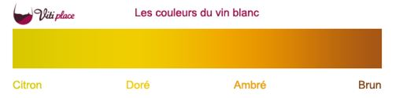
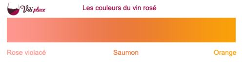

Généralités
Une dégustation de vin est un événement au cours duquel on expérimente, analyse et apprécie les caractères organoleptiques et plus particulièrement les caractères olfacto-gustatifs d'un ou de plusieurs vins.
Cette dégustation se compose essentiellement de quatre phases:
- examen visuel
- examen olfactif
- examen gustatif
- examen global
Examen visuel
L'examen visuel, aussi appelé « l'œil » permet d'apprécier la limpidité, l'intensité, la couleur et les reflets l'éventuelle effervescence d'un vin. On parle de « robe du vin ».
Inclinez le verre au-dessus d’une surface blanche et observer dans un premier temps sa limpidité. La présence de particules vous indiquera le degré de filtration que le vinificateur a exercé. Par exemple pour la limpidité, on a : limpide ou trouble.
Regardez ensuite le liquide en bordure du verre. Un aspect brillant révélera une certaine acidité qui apportera de la vivacité en bouche; par exemple: cristallin, brillant, éclatant ou au contraire mat, terne, éteint.
Passons à l’examen de la robe (la couleur) et de son intensité. Elle peut être : pâle, moyenne, intense
Il faut savoir que la robe évolue avec le temps.
Pour les rouges, la robe d’un vin jeune sera plutôt violacée alors que celle d’un vin très âgé aura des tons brique.Robe des vins rouges : violet, rubis, grenat, brun
Pour les vins blancs, un vin jeune présente des reflets verts pour devenir ambré pour les plus âgés. Robe des vins blanc : citron, or, ambré, brun.
Pour les rosés, un rose violacé est un signe de jeunesse alors que s'il vire sur les tons orangés il sera plus âgé.
 La couleur du vin vous permettra ainsi de vous donner une idée approximative de l’âge du vin mais attention à ne pas en faire une règle car il existe de nombreuses exceptions en fonction des cépages utilisés, des régions et des méthodes de vinification.
Maintenant inclinez puis redressez le verre et observer la manière dont le liquide redescend le long des parois afin d’en déterminer sa viscosité. Un vin ayant un bon degré d’alcool et/ou une bonne teneur en sucre glissera en formant des gouttes que l’on appelle des larmes. Attendez-vous alors à une certaine rondeur en bouche. Dans le cas contraire, le vin sera plutôt vif.
Si vous dégustez un vin effervescent, observez la taille et l’abondance des bulles qui ont tendance à révéler la finesse et l’onctuosité du vin.
Examen olfactif
L'examen olfactif permet d'analyser les parfums exprimés par le vin. On parle de bouquet, qu'on analyse en termes d'intensité, de type de parfum et de complexité. Pour bien analyser cette phase, les œnologues conseillent d'avoir un verre dont les bords supérieurs se replient un peu vers le centre, environ au tiers. Ces verres concentrent mieux les parfums au niveau du nez.
C'est l'étape la plus importante de la dégustation. Elle doit se dérouler en deux temps. Tout d'abord le premier nez, où l'on sent juste au dessus du verre pour ressentir le caractère général. Puis, le second nez, où l'on fait tourner le vin avant de le sentir à nouveau.
Un bouquet minéral, végétal, animal, épicé ? C'est votre sensibilité qui vous permettra de distinguer parmi les quelques 700 arômes possibles, celui que possède votre cru. Peut-être vous évoquera-t-il la pomme, le pamplemousse, ou le clou de girofle, le poivre noir, ou encore la lavande, le miel, le pain chaud, voire même la terre ou le tabac ! Une liste très longue d'arômes bien divers.
Etape 1: Le premier nez
Allez-y, n’ayez pas peur, plongez votre nez dans le verre et inspirez.A ce stade déterminez quelle est votre première impression. Est elle franche ou “douteuse” ? Si vous arrivez déjà à déterminer certains arômes on dira que le vin est ouvert ou dans le cas contraire on le dira fermé. Ne chercher pas forcément à identifier immédiatement des arômes précis mais plutôt une tendance. Voici un exemple de familles : floral,fruits verts/rouges/agrumes, agrumes, épice, végétal, minéral.
Etape 2: Le second nez
Faîtes tourner le vin dans votre verre ceci afin de le mettre en contact avec l’air et à libérer les arômes qu’il renferme. Si vous constatez une intensité aromatique beaucoup plus importante peut être faudra-t-il envisager de carafer. Dans le cas contraire, ne le carafez surtout pas ; le vin est arrivé à maturité et trop l’oxygéner ne ferait que le dégrader. Poursuivez votre analyse sensorielle, si vous aviez déjà identifié une famille d’arômes lors du premier nez, essayer de déterminer des arômes plus précisément. Voici un tableau récapitulant les arômes les plus courants que vous êtes susceptible de rencontrer dans le vin.
- Fruité
- Framboise
- Cerise
- Cassis
- Mûre
- Abricot
- Citron
- Orange
- Pêche
- Poire
- Pomme
- Pamplemousse
- Mandarine
- Figue
- Mangue
- Ananas
- Litchi
- Pruneau
- Floral
- Violette
- Rose
- Miel
- Acacia
- Tilleul
- Aubépine
- Jasmin
- Camomille
- Végétal
- Champignon
- Foin
- Herbe
- Sous-bois
- Fougère
- Paille
- Humus
- Menthe
- Terre
- Poivron vert
- Olive verte
- Truffe
- Thym
- Epicé
- Cannelle
- Poivre
- Muscade
- Réglisse
- Laurier
- Safran
- Clou de girofle
- Boisé
- Écorce
- Pin
- Sapin
- Cèdre
- Vanille
- Résine
- Autres arômes
- Noix
- Noisette
- Tabac
- Beurre
- Silex
- Pierre à fusil
- Cuir
- Pain grillé
- Goudron
- Gibier
- Caramel
- Café
- Chocolat noir
Examen gustatif
Analyser un vin en bouche, c’est déterminer son attaque, son équilibre, son évolution et sa longueur.
On prend une petite quantité de vin, 1 à 2 cl (variable suivant les dégustateurs) à laquelle on ajoute une aspiration d'air afin de réchauffer le vin pour qu’il puisse libérer ces arômes. La première impression ressentie en bouche, l'attaque, est le moelleux. Comme souvent en dégustation, il s'agit de déterminer le niveau d'intensité de cette sensation à goût sucré (que l'on nomme moelleux). Le moelleux est apporté par les alcools et éventuellement le sucre résiduel. Elle introduit une notion de rondeur, de volume et de gras (le toucher du vin) suivant son intensité.Ce sont les alcools (éthanol, glycérol) qui apportent au vin cette sensation de rondeur, voire de douceur aux vins secs. Dans un temps plus ou moins long vient la sensation acide7.
Ces deux paramètres ; moelleux - acide, vont déterminer l'équilibre des vins blancs. Puis il y a perception des arômes de bouche. Pour les vins rouges on parle d'équilibre en attaque de bouche. Le moelleux empâte la salive suivant son intensité. Le moelleux atténue la sensation acide et amère.
- Équilibre : Il s’agit de déterminer l’équilibre entre le moelleux (ou sucré), l’acide et l’alcool pour les vins blancs ou le moelleux, l’acide, l’alcool et les tanins pour les vins rouges. De leur équilibre dépend l’harmonie de la constitution du vin. Voir ci-dessous le chapitre sur l’équilibre d’un vin.
- Évolution : Au cours de la dégustation d’un vin, on ressent des goûts successifs. Souvent les dernières impressions (finale amère) peuvent être bien différentes des premières (attaque moelleuse). L’analyse de l’évolution du vin en bouche (attaque → milieu de bouche → fin de bouche) reflète les qualités gustatives d’un vin. L'attaque en bouche évalue principalement l'équilibre du vin, le milieu de bouche sa structure (appelée charpente) et sa consistance (impression tactile), la finale évalue les arômes en rétro-nasal et la « longueur ».
- Longueur : La « longueur », ou persistance aromatique intense (PAI)16, c’est le temps en secondes (une seconde = une caudalie) pendant lequel les arômes persistent en bouche après qu'on a avalé ou recraché le vin. Lorsque la persistance des arômes (due aux constituants les moins volatils, c'est-à-dire les plus tenaces) n'est plus perceptible en bouche (en deçà de notre seuil de perception), il y a une reprise de la salivation.
Interprétation : la longueur est en rapport avec le niveau qualitatif d'un vin. Mais l'on jugera de l'intensité et de la qualité de cette longueur (finesse des arômes). Plus un vin sera long, plus il sera intéressant de l'associer à un mets adapté. En effet, il y aura un espace plus important pour la superposition des saveurs vin / mets.
On différencie la longueur en bouche (persistance aromatique) avec un arrière-goût (goût défectueux). - L’équilibre d’un vin en bouche : Après avoir reconnu et évalué les différentes saveurs présentes dans le vin, il faut déterminer leur puissance et surtout leur rapport. On tente de déterminer l’équilibre du vin entre :
- le moelleux (alcools et/ou sucre) et l'acidité pour les vins blanc ;
- le moelleux (alcools et/ou sucre) et l'acidité plus tanins pour les vins rouges.
Examen global
Après avoir analysé en détail le vin sous trois angles fondamentaux (œil, nez, bouche), il est temps de prendre quelques secondes de recul et d’essayer d’en dégager une évaluation globale.
Il s’agit alors d’essayer de juger le vin pour ce qu’il est (vin de cépage, vin technologique ou vin de terroir), sa garde potentielle dans le temps et son accord gastronomique.
La dégustation est terminée, vous êtes maintenant en mesure de juger la qualité d’un vin et d’exposer les raisons qui font que vous l’appréciez ou non. Avant tout jugement définitif, distinguez bien vos goûts personnels et la qualité du vin (ce n’est pas parce que vous n’aimez pas les vins acides que celui que vous venez de déguster est mauvais). Si le vin n’a pas de défaut, quelques critères permettent de faire la différence entre un vin médiocre, un bon vin et un grand cru :
- L’équilibre : trop de fruits et de sucres peuvent être écoeurants. À l’inverse, une acidité et des tanins en excès rendent le vin désagréable et austère. Il faut donc que ces quatre paramètres soient en parfaite harmonie.
- La longueur : Une fois avalé, ou recraché, le vin peut laisser des arômes persistants en bouche. C’est ce que l’on appelle la longueur. Elle s’exprime en caudalie (une caudalie = une seconde). Attention, la longueur ne doit pas prendre en compte l’acidité, l’amertume, ou le sucré mais uniquement les arômes. On commence a parler de vin de qualité lorsque sa longueur en bouche atteint entre 8 et 10 caudalies. Les plus grands vins peuvent atteindre jusqu’à 20 caudalies, je vous laisse imaginer.
- La complexité : Les vins ayant une ou deux saveurs simples peuvent devenir vite ennuyeux. Un vin de qualité aura de multiples nuances aromatiques.
- L’expression : Un vin de moindre qualité donne l’impression qu’il peut provenir de n’importe où et avoir été élaboré à partir de n’importe quel cépage. Un grand vin saura exprimer la qualité du cépage utilisé ou de sa région de production.